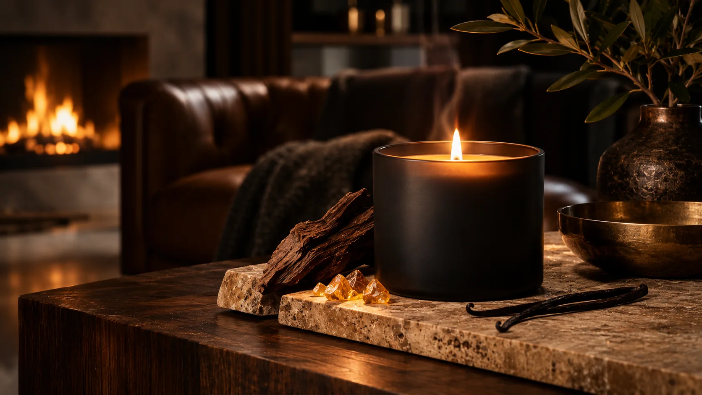

The scent of a well-kept space.
The room should feel as considered as the man who lives in it. Explore candles, diffusers and room sprays by scent, space and the way you actually live.

THE HOME SCENT FINDER
Find a scent that fits the room.
Answer a few practical questions about the space, your preferences and the way you want fragrance delivered. Get a format recommendation and a shopping direction—without pretending a generic scent note guarantees a match.

THE HOME MANUAL
Start with the fundamentals.
Build a home scent strategy ↗Match scent to room, season and routine.How to choose a candle ↗Wax, wick, vessel, scent strength and safety.Find the right diffuser ↗Passive reeds versus powered devices.Room sprays, explained ↗How to use an on-demand scent thoughtfully.Safety, pets and ventilation ↗Essential precautions before you scent a space.What you wear ↗Explore the original Menscents cologne index.
Shopping links are affiliate links to Amazon search results, not verified product offers. We may earn from qualifying purchases.